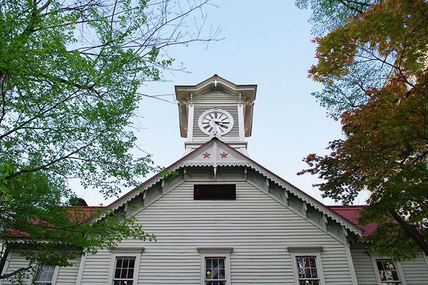
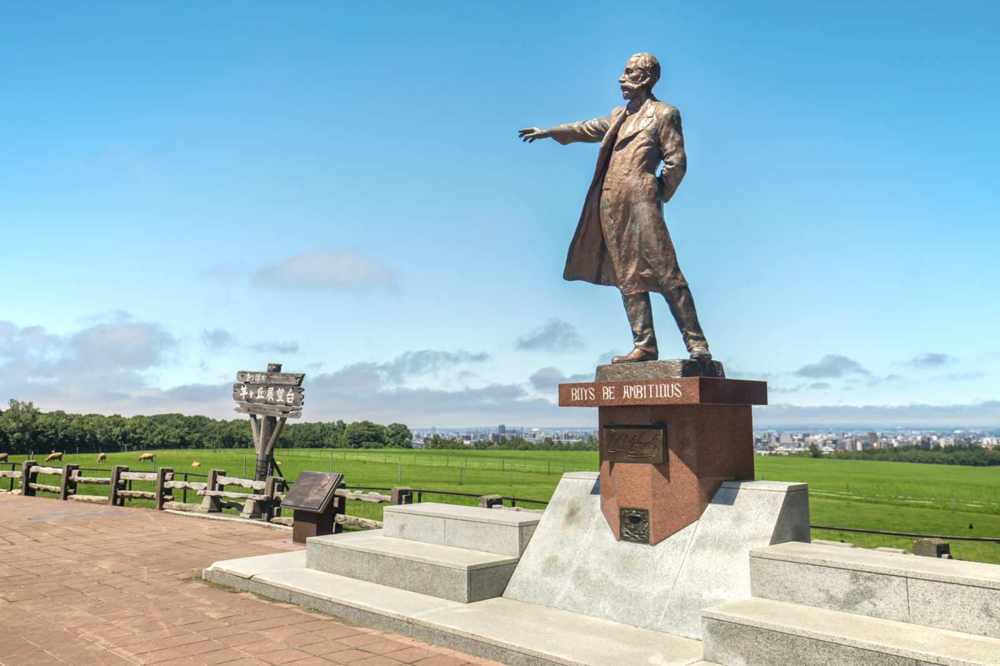
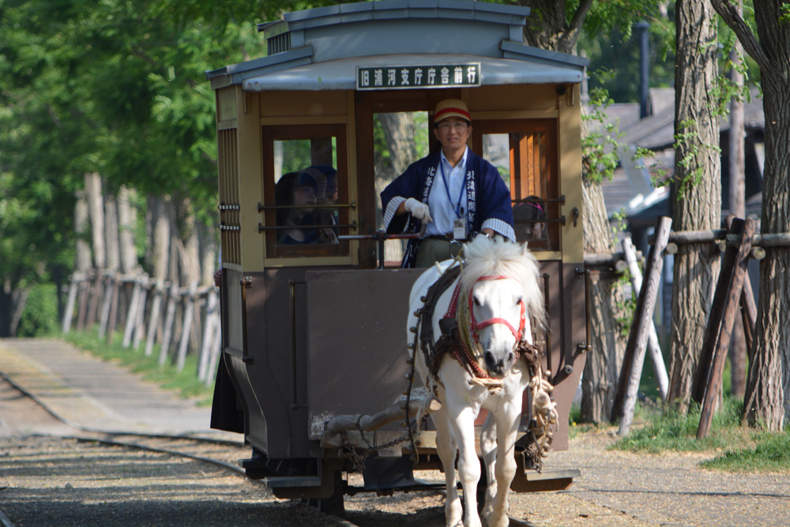
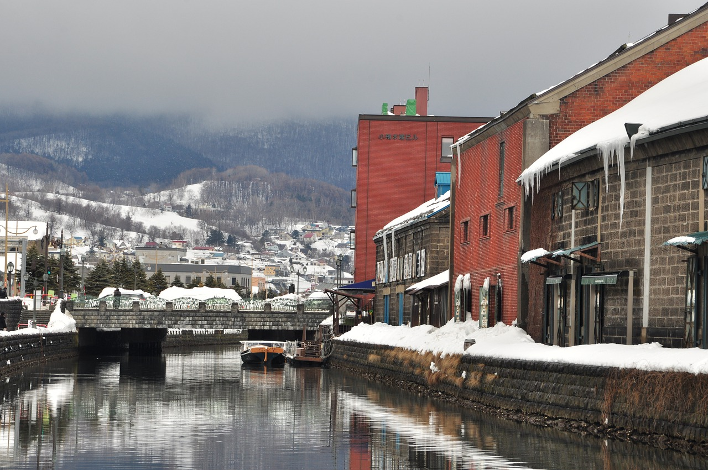
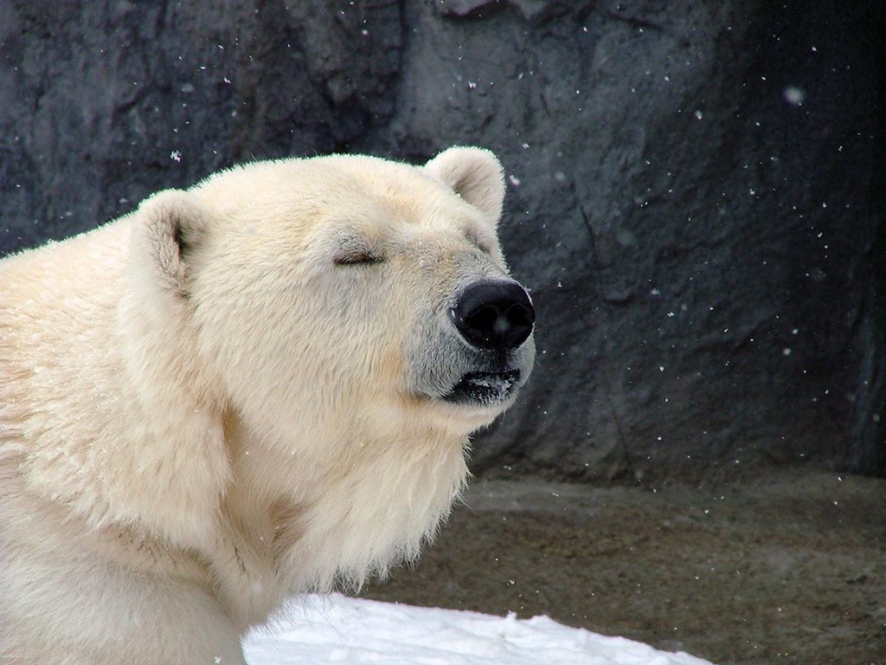
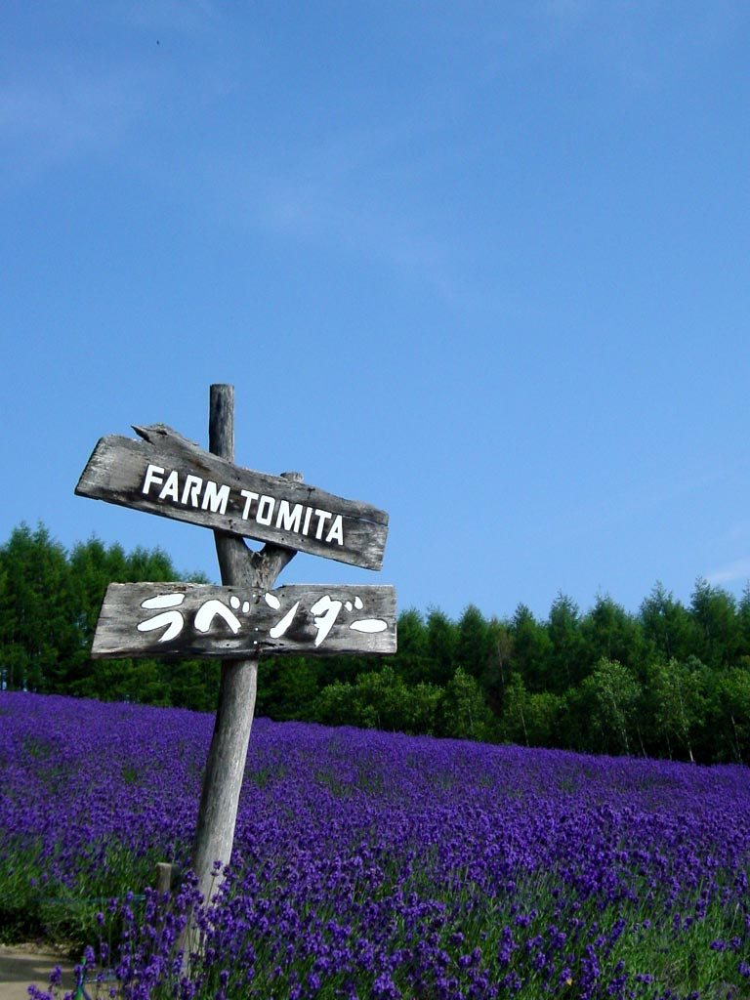
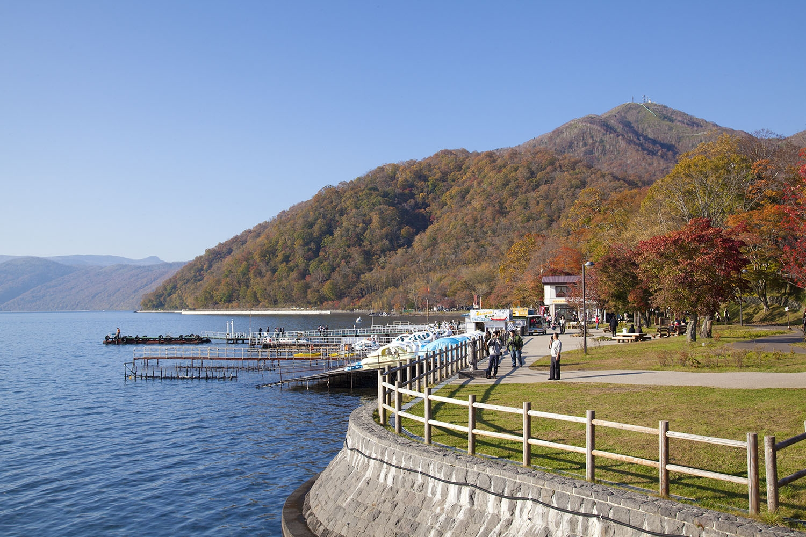
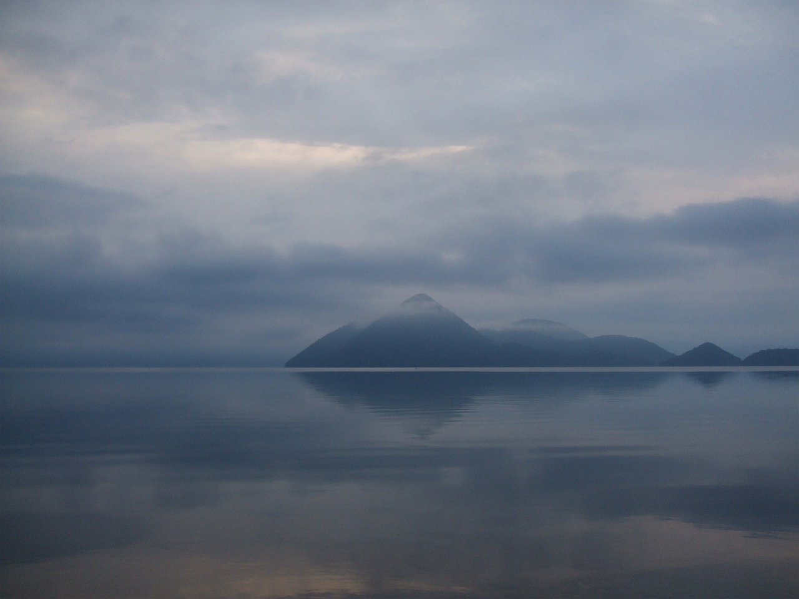
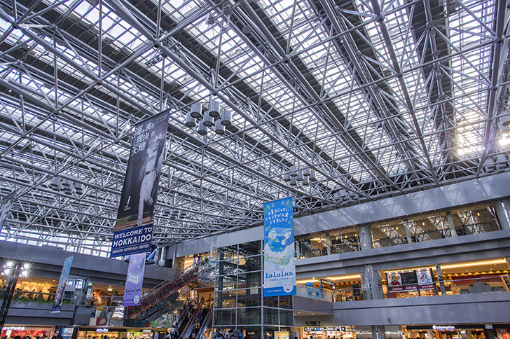
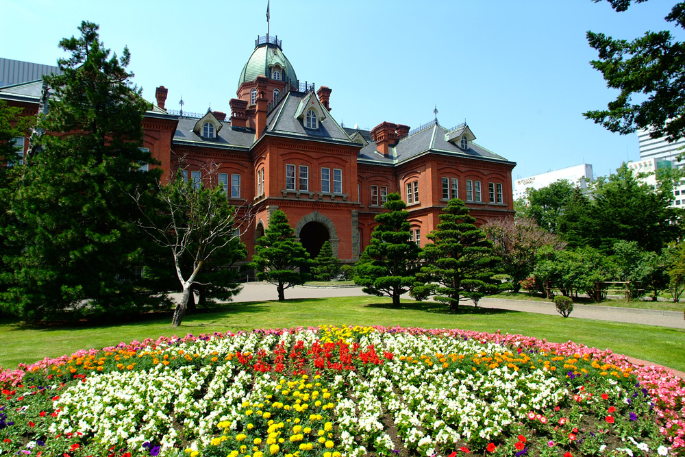

お申し込み・ご連絡は 営業時間07:00-16:00(不定休)
TEL:090-8374-9182
観光コース一覧
1.札幌市内はや周りコース
1.札幌市内はや周りコース
所要時間約2.5時間

タクシー一台: 15,500円
コース内容
ホテル
北海道神宮
宮の森シャンツェ
大倉山シャンツェ
北海道旧庁舎
(赤レンガ)
時計台
ホテル
2.札幌市内のんびりコース
2.札幌市内のんびりコース
所要時間約3.5時間

タクシー一台: 21,700円
※羊ヶ丘展望台料金は別途かかります
コース内容
ホテル
1.札幌市内はや周りプラン
羊ケ丘展望台
OR
白い恋人パーク
ホテル
3.札幌市内はや周り＆開拓の歴史コース
3.札幌市内はや周り＆開拓の歴史コース
所要時間約4.5時間

タクシー一台: 27,900円
※開拓の村入場料金は別途かかります
コース内容
ホテル
1.札幌市内はや周りプラン
開拓の村
ホテル
4.小樽日帰りコース
4.小樽日帰りコース
所要時間約5.5時間

タクシー一台: 31,000円
※遊覧船料金は別途かかります
※余市ニッカウイスキー工場を見学されたい場合、プラス5500円で承ります。
コース内容
ホテル
小樽市内観光
祝津パノラマ展望台
小樽運河クルーズ
にしん御殿
おすすめ寿司屋
白い恋人パーク
ホテル
5.旭山動物園日帰りコース
5.旭山動物園日帰りコース
所要時間約9時間

タクシー一台: 52,200円
※旭山動物園入場料金は別途かかります。
コース内容
ホテル
旭山動物園
四季彩の丘
ファーム富田
青い池
ホテル
6.富良野・美瑛日帰りコース
6.富良野・美瑛日帰りコース
所要時間約8時間

タクシー一台: 47,200円
コース内容
ホテル
ファーム富田
四季彩の丘
青い池
富良野マルシェ
ホテル
7.支笏湖日帰りコース
7.支笏湖日帰りコース
所要時間約8時間

タクシー一台: 21,700円
コース内容
ホテル
支笏湖
ホテル
または
新千歳空港
8.支笏湖＆洞爺湖日帰りコース
8.支笏湖＆洞爺湖日帰りコース
所要時間約8時間

タクシー一台: 47,200円
※ロープウェイ料金は別途かかります。
コース内容
ホテル
中山峠
洞爺湖昭和新山有珠山ロープウェイ
支笏湖
ホテル
または
新千歳空港
9.エアポートコース
9.エアポートコース
所要時間約3.5時間

タクシー一台: 25,000円
※高速料金は別途かかります。
コース内容
ホテル
2時間半以内なら札幌市内観光どこでもOK!
新千歳空港
10.お得な2時間フリーコース
10.お得な2時間フリーコース
所要時間約2.5時間

タクシー一台: 15,500円
コース内容
ホテル
2時間以内なら札幌市内観光どこでもOK!
ホテル
1,2,3,10の観光コースをご利用の方は+12,000円
4,5,6の観光コースをご利用の方は+16,500円
で新千歳空港までお送り致します
※高速道路料金は別途頂戴いたします。
※全てのコースは三浦個人タクシーの料金設定です。料金、時間は目安とさせていただきます。
※延長料金は30分3000円といたします。